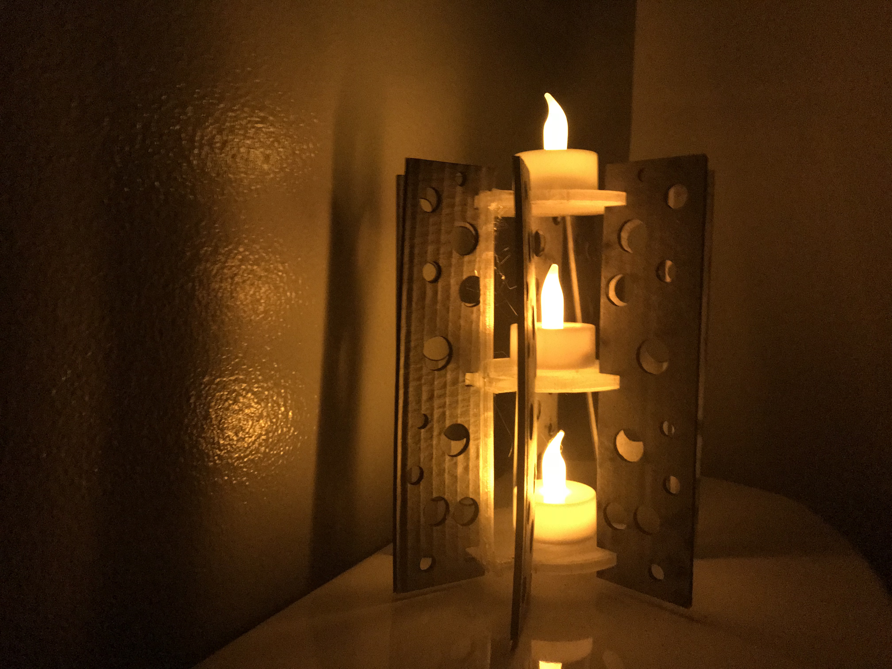

I used Rhino to draw my base and used the same measurements for my illustrator file. I also used Dremel to slice my model to print.
For the first hour of 3D printing, I ran into multiple problems. One, the glue would not stick to the board. Second, orginally I drew my rhino model in inches and that did not go well in Dremel. I later created the model in mm and that worked better for Dremel.
I laser cutted a few pieces to made sure it fit together. Fortuntely, I had already taken into consideration the material thickness in step 2 and did not have to make any adjustments.
Machine Settings: Material Soft Wood, Thickness: .08" Speed: 25% Power: 100%
I had Area01 staff help me adjust the Dremel Print Settings because my print would not stick to the board. They suggest I use tape (hence in the images you may see blue tape holding down my base)